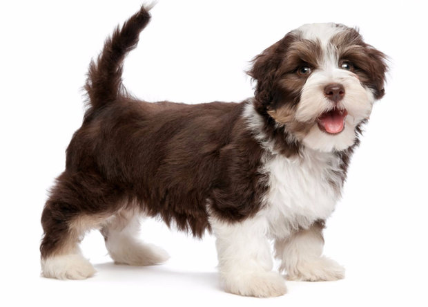
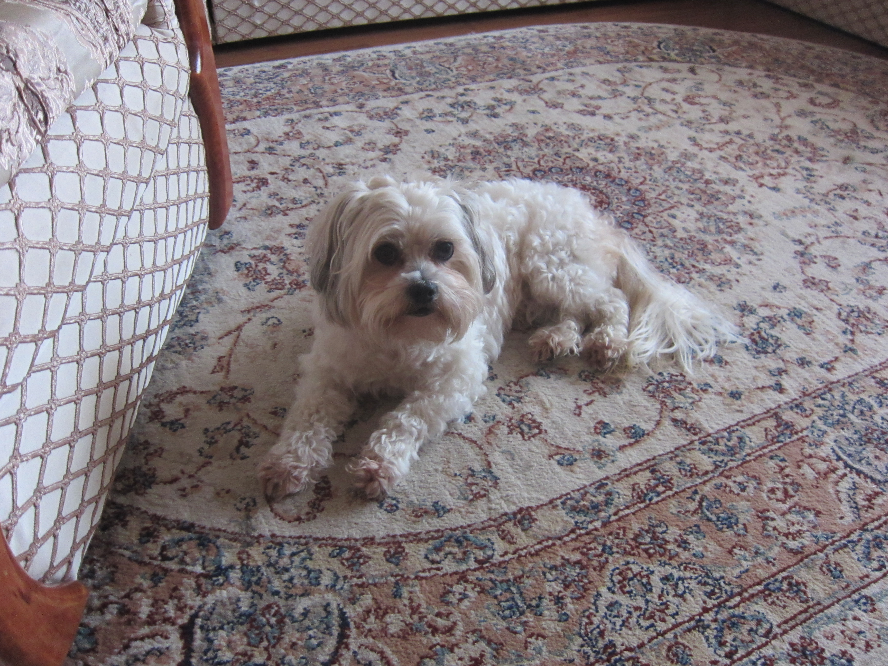
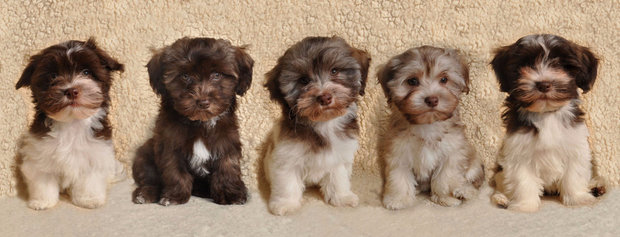

Основные правила и нюансы ухода за гаванским бишоном (хаванезом)

Национальная собака Кубы - маленькая, но с характером, собака породы гаванский бишон никому не даст заскучать
Разберемся, в чем особенность этого животного.
Описание и характеристика
Маленькие породы собак все чаще выбирают в качестве домашних любимцев. Их легко завести в небольшой квартире и ухаживать за ними значительно проще. Уже давно сердца любителей собак покоряет гаванский бишон — порода с интересной историей и симпатичным внешним видом.
- Страна происхождения:Куба
- Размер:маленький
- Рост:21-29 см
- Вес:3-5,5 кг
- Окрас:белый, черный, серебро, золото, рыжий, кремовый, возможен смешанный
- Длина шерсти:длинная
- Линька:слабая
- Продолжительность жизни:до 15 лет
- Группа:декоративные собаки и собаки-компаньоны
- Кем признана:СKC, FСI, АKС, UКC, ANКС, NКC, АPRI, АCR
- Помет:от 1 до 9 щенков, в среднем - 4
Внешний вид и фото
Гаванский бишон считается аристократичным псом — стоит лишь взглянуть на его гордый вид. Сама собака небольшая, компактно сложенная, имеет крепкий костяной каркас. Лапы короткие, хвост кольцом, а уши свисают. Именно шерсть придает псам особый шарм — она густая, блестящая, длинная. Окрас может варьироваться в зависимости от родословной — часто встречаются хаванезы с черно-золотистой, черно-белой шерстью. Очень редко они бывают чисто белыми, чаще всего, встречается серебристая шерсть.
Во внешнем виде бишонов большую роль играют пропорции:
- морда (ее длина равняется расстоянию между затылочным бугром и основанием носа)
- голова (ее размер равняется 3/7 тела пса)
- тело (длина от плеча до ягодицы соотносится к высоте в холке 4/3)


Характер
Гаванская болонка отличается дружелюбным и ласковым характером. Собака общительная, не нервная, спокойная и очень умная, что не всегда присуще маленьким породам. Если заняться ее воспитанием, то она будет выполнять разные команды не хуже больших собратьев.
Эта порода легко адаптируется к разным условиям, она постоянно нуждается в общении, поэтому таких собак лучше заводить тем, у кого достаточно свободного времени — пенсионерам, семьям с детьми, людям с удаленной работой.
История породы
Считается, что нынешний внешний вид хаванеза появился в результате скрещивания бишонов с другими видами болонок, также с пуделями. Хотя родиной псов считается Куба, также есть теория, что болонки появились в XVII веке в Испании и Италии.
После чего их завезли на Карибские острова, где они и прижились. Там порода сформировалась и стала популярной среди аристократов. Век спустя их начали называть шелковыми собачками Кубы, тогда их и признали местной породой. Но со временем они начали вымирать и сохранились только благодаря кубинским эмигрантам, которые жили в США.
Граммотный выбор и цена щенка
Уже в пару месяцев щенка бишона заводчики могут отдать в новую семью.
Вот несколько правил, по которым нужно выбирать щенка:
- пес должен быть активным, он с радостью изучает мир, новые запахи, нового человека, готов играть и бегать;
- окрас не меняется, поэтому, какого щенка вы возьмете, таким он и останется в плане шерсти;
- если есть пигментация на носу или веках, то она не пройдет, берите это во внимание;
- щенки не должны хромать, пощупайте его аккуратно, проследите, чтобы не было болевой реакции на прикосновения.
Берите псов только у проверенных заводчиков - у таких есть документы на псов и родословная.
Стоимость варьируется от 300 до 500 долларов за щенка. Можно найти и дешевле, главное убедиться, что вы забираете домой здоровое животное.
Жилье для собаки
Бишон-хаванез с легкостью приживется даже в маленькой квартирке, а частный дом станет для него роскошью. Выберите для нового члена семьи уголок, желательно не в проходной комнате, чтобы пес никому не мешал. Купите ему лежак, специальную корзинку или домик, только выбирайте прочные материалы, иначе щенок своими острыми зубами разорвет предмет. Миску можно поставить возле места для сна, а можно и на кухне.
Миска для воды всегда должна быть наполнена, к тому же рядом может стоять перекус в виде сухого корма. Посуду для пса нужно брать с фиксаторами, иначе он перевернет миски. Также для щенков можно взять резиновые игрушки для натачивания зубов.
Как ухаживать
Болонка хоть и небольшая, но все же определенного ухода требует. Важно следить за ростом шерсти и когтей.
Уход за шерстью
У этих малышей она длинная и густая. Поэтому нужно постоянно за ней ухаживать. Стригут эту породу довольно редко. Особое внимание нужно уделить лапам — стрижку на них организовывайте по мере отрастания волос, чтобы они не мешали передвигаться. Также шерстку нужно постоянно расчесывать, чтобы она не спутывалась.
Осенью и весной собака линяет больше, чем обычно. Также может появиться специфический запах, поэтому в это время купать их можно чаще. Зимой псов нужно утеплять — выбор комбинезонов для таких собак огромен.
Купание
Купать пса лучше не чаще, чем раз в месяц, со специальными средствами. Сейчас существуют не только шампуни, но и кондиционеры для шерсти собак, чтобы она была гладкой и блестящей.
Глаза, уши, зубы, когти
Глаза болонок иногда могут слезиться, для ухода за ними достаточно иногда протирать их тампоном с чистой водой. Что касается ушей, то шерсть внутри их нужно подстригать, чтобы она не забила слуховые каналы. Также уши регулярно очищают от серы с помощью влажных тампонов.
Для ухода за зубами хватит обычной чистки раз в месяц. Приобрести специальную пасту и щетку можно в зоомагазине. Когти подстр��гают по мере отрастания, не больше чем на 2 мм, чтобы не поранить лапы.
Выгул и физические нагрузки
Бишонов можно выгуливать пару раз в день, утром и вечером. Также они любят прогулки на руках, так как короткие лапы часто приводят к усталости. Но перегружать их нельзя, активная прогулка не должна длиться больше часа.
Как кормить гаванского бишона
От правильного питания зависит состояние питомца и вид его шерсти.
Кормить можно:
- только сухими кормами высшего качества;
- комплексом из сухого корма и натуральных продуктов;
- только натуральными продуктами.
Первые полгода болонок кормят не меньше 6 раз в день, потом достаточно будет и нескольких раз. Ни в коем случае им нельзя есть сладости, консервы, колбасы, человеческие продукты питания.
У них должна быть отдельная пища, сбалансированная и разнообразная. Мясо, овощи, творог, каши, рыба — прекрасно подойдут для ежедневного рациона. Либо нужно подобрать сухой корм, который будет восполнять потребность в минералах, витаминах, жирах и белках.
Воспитание и дрессировки
Они легко обучаются, поэтому с младенчества их можно тренировать с помощью поощрений. Им по силам сидеть, стоять, лаять и даже приносить небольшие предметы по команде.
Здоровье питомца
Гаванские бишоны довольно болезненны. Но при правильном уходе могут противостоять вирусам и прочим хворям.
Характерные болезни
Часто встречаются такие болезни:
- глаз (катаракты);
- опорно-двигательного аппарата (дисплазия тазобедренных суставов, вывих коленной чашечки);
- ушей (отиты).
Любая из эттих болезней должна лечиться только под присмотром доктора.
Также нужно смотреть на общее состояние животного, если пес не активен, плохо ест и пьет, постоянно спит - медлить с визитом в клинику не стоит.
График вакцинаций
Прививать гаванских бишонов начинают с 2-х месяцев. Вакцина защищает от чумки, бешенства, лептоспироза, коронавируса, трихофитии, парагриппа и парвовирусного энтерита.
Через три недели дается вторая доза, а потом вводят вакцину в полгода и год. Каждый последующий год жизни пес также прививается. Вводят вакцину в холку или бедро. Перед прививкой любимца должны обследовать, если пес здоров — можно вакцинировать.
Если придерживаться всех правил по уходу за животным, то вы обеспечите ему безболезненную и счастливую жизнь. Главное: не жалеть средств на питание и времени на воспитание гаванской болонки.
| Гаванский бишон | ||
|---|---|---|
| Активность | в доме | 3.5 |
| на улице | 3 | |
| Повиновение | дрессировка | 2.5 |
| чужим | 3 | |
| Доминирование | в семье | 4 |
| над собаками | 3 | |
| Защита своей территории | от людей | 1.5 |
| от собак | 3 | |